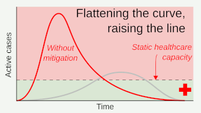
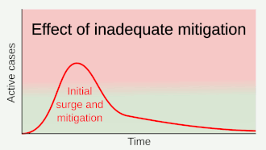

Preventive measures to reduce the chances of infection include staying at home, avoiding crowded places, keeping distance from others, washing hands with soap and water often and for at least 20 seconds, practising good respiratory hygiene, and avoiding touching the eyes, nose, or mouth with unwashed hands. The U.S. Centers for Disease Control and Prevention (CDC) recommends covering the mouth and nose with a tissue when coughing or sneezing and recommends using the inside of the elbow if no tissue is available. Proper hand hygiene after any cough or sneeze is encouraged. The CDC has recommended cloth face coverings in public settings where other social distancing measures are difficult to maintain, in part to limit transmission by asymptomatic individuals. The U.S. National Institutes of Health guidelines do not recommend any medication for prevention of COVID‑19, before or after exposure to the SARS-CoV-2 virus, outside the setting of a clinical trial.
Social distancing strategies aim to reduce contact of infected persons with large groups by closing schools and workplaces, restricting travel, and cancelling large public gatherings. Distancing guidelines also include that people stay at least 6 feet (1.8 m) apart. There is no medication known to be effective at preventing COVID‑19. After the implementation of social distancing and stay-at-home orders, many regions have been able to sustain an effective transmission rate ("Rt") of less than one, meaning the disease is in remission in those areas. In a simple model needs on average over time be kept at or below zero to avoid exponential growth.
As a COVID-19 vaccine is not expected until 2021 at the earliest, a key part of managing COVID‑19 is trying to decrease and delay the epidemic peak, known as "flattening the curve". This is done by slowing the infection rate to decrease the risk of health services being overwhelmed, allowing for better treatment of current cases, and delaying additional cases until effective treatments or a vaccine become available.

According to the WHO, the use of masks is recommended only if a person is coughing or sneezing or when one is taking care of someone with a suspected infection. For the European Centre for Disease Prevention and Control (ECDC) face masks "... could be considered especially when visiting busy closed spaces ..." but "... only as a complementary measure ..." The U.S. CDC recommends masks in public places where 6-foot social distancing is difficult to maintain, primarily in case you yourself are asymptomatic and to prevent unknowingly spreading the infection.
Several countries have recommended that healthy individuals wear face masks or cloth face coverings (like scarves or bandanas) at least in certain public settings, including China, Hong Kong, Spain, Italy (Lombardy region), Russia, and the United States.

Those diagnosed with COVID‑19 or who believe they may be infected are advised by the CDC to stay home except to get medical care, call ahead before visiting a healthcare provider, wear a face mask before entering the healthcare provider's office and when in any room or vehicle with another person, cover coughs and sneezes with a tissue, regularly wash hands with soap and water and avoid sharing personal household items. The CDC also recommends that individuals wash hands often with soap and water for at least 20 seconds, especially after going to the toilet or when hands are visibly dirty, before eating and after blowing one's nose, coughing or sneezing. It further recommends using an alcohol-based hand sanitiser with at least 60% alcohol, but only when soap and water are not readily available.
For areas where commercial hand sanitisers are not readily available, the WHO provides two formulations for local production. In these formulations, the antimicrobial activity arises from ethanol or isopropanol. Hydrogen peroxide is used to help eliminate bacterial spores in the alcohol; it is "not an active substance for hand antisepsis". Glycerol is added as a humectant.